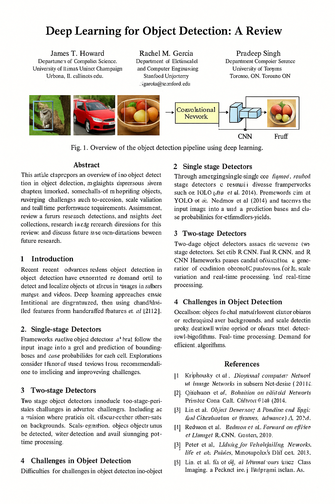
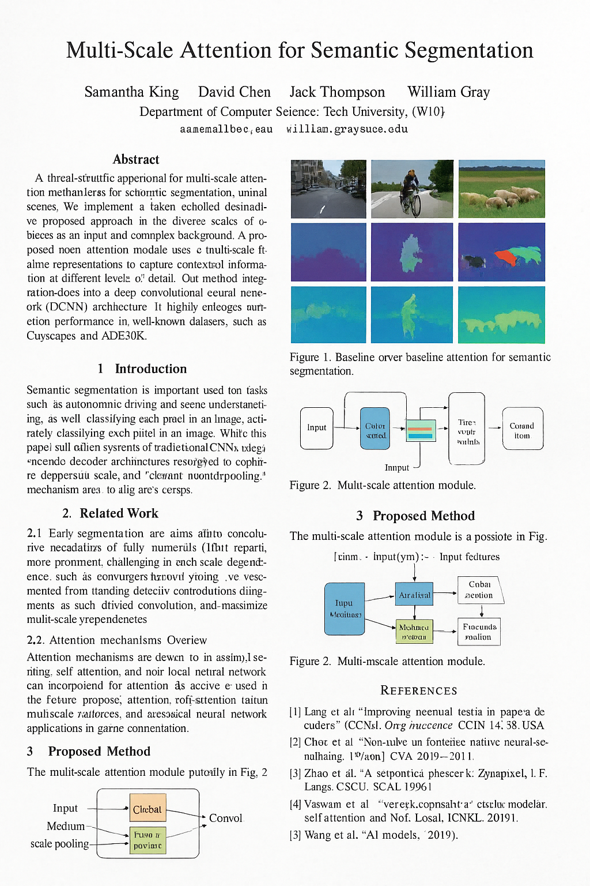

01An ambiguous test
Below are pairs of scientific figures. One in each pair was cropped from a real computer-vision paper. The other was generated by an image model that had never seen a dataset, run an experiment, or plotted a number.
One catch: both images start blurred. Sharp, the test is too easy to be interesting, because generated figures give themselves away with text. Axis labels dissolve into letter-shaped smears, legends repeat themselves, a word comes out almost but not quite "Detection." Blurring both images equally takes all that off the table and leaves the harder question: does the structure of this figure make sense? Each pair sharpens the moment you answer, so you can see what you were missing. (Turn the blur off if you'd rather play on easy.)
Blurred, most people sit near chance for a while, then start reading composition instead of type: a pipeline diagram whose arrows loop back into themselves, a bar chart with no baseline, a colour bar that shades from blue to blue.
An embedding model does none of that. It turns each figure into a list of numbers and never looks at the pixels again. By the end of this post, a straight line drawn through two of those numbers will separate the same 269 images with 87.0% accuracy.
02Where the corpus came from
The usual worry about AI and publishing is that a language model wrote your abstract. This corpus is about a stranger case: what if nothing was written at all?
Every page in arxAIv is an image. A single prompt —
"generate a CVPR conference paper; the page should include methodology, experimentation,
and scientific figures" — was run through a spread of text-to-image and multimodal
systems: Stable Diffusion 3.5-Large, FLUX.1-schnell,
Qwen-Image, HunyuanImage 3.0, HiDream-L1,
Gemini 2.5 Flash, GPT-5.1, and Sora. What comes back
isn't a document. It's a picture of one: two columns of type that resolve into
letterforms at a distance and into nonsense up close, an author block, an affiliation line, a
reference list, and one or more figures.
I then treated those pages as if they were real artifacts and put them through the kind of forensics no reviewer has time for: OCR, embedding, clustering, and a hand audit of every institution and every citation.


03Turning a figure into 512 numbers
To compare 269 images to each other we need something better than "they look similar." The tool for that is an embedding: a function that maps an image to a point in a high-dimensional space, trained so that images meaning similar things land near each other.
Here that function is OpenCLIP ViT-B-32, pretrained on
laion2b_s34b_b79k. It chops each figure into 32×32 patches, runs them through a
vision transformer, and emits 512 numbers. Nothing about it was tuned on scientific
figures, and nobody ever told it which of ours are fake. Its whole training goal was "match
this image to its caption."
How to read a distance
Two embeddings are compared by cosine similarity: the cosine of the angle between the two 512-dimensional vectors. It runs from −1 (opposite) through 0 (unrelated) to 1 (identical direction). Magnitude is thrown away, so a bright figure and a dim one with the same content still score high.
Averaged over every pair within and between the two sets:
Compare the third line to the first two. Generated figures look more like each other than like real work, and — this is the odd part — more like each other than real figures do. That's what you'd expect from a corpus drawn out of one aesthetic instead of a few hundred labs with their own plotting habits.
Averages hide structure, though. Seeing the structure means looking at the whole corpus at once, which means squeezing 512 dimensions down to two.
04The map
Principal component analysis finds the directions along which the corpus varies most and keeps the top few. It's unsupervised — nobody tells PCA which figures are generated. All it knows is that the cloud of 269 points is stretched further along some axes than others, and it keeps the longest ones.
Below is the corpus projected onto the first two of those axes — generated against real. Colour is the ground truth that PCA never saw. Hover any point to see the figure it stands for; click to open it.
The two populations pile up in different places, with a contested middle. To quantify that without leaning on the projection, throw the projection away and ask a local question back in the original 512 dimensions: if I stand on a figure and look at its eight nearest neighbours, how many are the same kind as me?
Across all 2,147 neighbour links, 84.9% stay within their own population. Generated figures are slightly more clannish than real ones — 87.1% of their neighbours are also generated, against 81.7% for real figures. A model trained only on image–caption pairs, given no notion that "AI-generated" is a category, sorts them anyway.
05Drawing a line through it
Neighbour purity is a local statement. The global version of the question is a classifier, and the simplest one worth trusting is linear discriminant analysis: find the single direction that pulls the two class means apart best relative to their spread, project every point onto it, cut at the midpoint. One direction, one threshold, no hidden layers.
Fitting that on just PC₁ and PC₂ — the two axes in the map above — and evaluating it leave-one-out, so every figure is scored by a line fitted without it:
PC₁ alone already gets 75.8%. The second component adds another eleven points. Two numbers out of five hundred and twelve.
06Is it just that fakes look different?
Here's the obvious objection, and it deserves a test rather than a paragraph of reassurance. Maybe CLIP isn't detecting anything semantic at all. Maybe generated figures are just blurrier, or more colourful, or more crowded, and any dumb pixel statistic would do the same job.
So I computed seven cheap appearance statistics over the same 269 images — edge density, ink coverage, colourfulness, mean saturation, tonal entropy, white space, aspect ratio — and asked each one, on its own, to separate the corpus.
Bar length is scaled from AUC 0.5 (coin flip, no bar) to AUC 1.0 (perfect). The best of them reaches 0.589.
Essentially nothing. Real figures have marginally busier edges and a bit more colour, and generated ones fill a bit more of the page with ink, but every one of those differences is small enough to drown in the variation within each group. Throw all seven into a classifier together and you get 63.9%, six points above guessing.
That gap is the finding. CLIP isn't measuring how these images look; it's measuring what they seem to be about. And generated figures are about a narrower, more repetitive set of things than a real conference proceedings is. They inherit one model's idea of what a chart is, over and over.
One caveat
The PCA was fitted on all 269 figures before the leave-one-out loop, so the projection has seen the whole corpus, even though no classifier ever saw the held-out label. That makes these numbers a little optimistic as an estimate of how well any of this would work on figures from outside the collection. It doesn't affect the comparison between rows, pixels versus CLIP, since both were scored the same way.
07Inside the generated half
CLIP tells us the two populations differ. It doesn't tell us how a fake figure fails. For that I ran four hand-built diagnostics over the 156 generated figures:
- CLIP caption agreement — cosine similarity between the figure and the caption printed beneath it. Low means the picture and its own caption are about different things.
- Structural complexity — density of edges and contours in the rendered panel.
- Gibberish ratio — share of OCR-recovered tokens that are not words in any language.
- Repetition — count of duplicated glyph runs, the telltale of a model that has lost its place mid-legend.
Pick any two and look for structure. Hover a point to see the figure behind it.
The distributions are the story. Caption agreement averages 0.628 and bottoms out at 0.269, a figure whose own caption describes something else entirely. The gibberish ratio averages 0.119, so about one token in eight inside a typical generated figure isn't a word, and it peaks at 0.451: nearly half the text in that panel is letterlike shapes arranged into nothing.
None of it correlates cleanly, either. A figure can be structurally intricate and completely illegible. It can be perfectly legible and describe the wrong experiment. There's no single "wrongness" axis, which is why 512 dimensions beat any one of these four.
08The text layer falls apart first
Because these pages are pictures, their text has no ground truth. It has to be OCR'd back out, which is its own kind of forensics, and what comes out is uncanny. The shape of scientific writing is intact: an abstract that says a method is proposed, an introduction that lists applications, a reference list with bracketed numbers and et-als. Underneath, it's all scaffolding.
Structurally, 69% of the hundred pages are complete. The rest are missing a piece outright; 21 pages never render a title at all.
Browse the archive yourself. Every page is here, with the text OCR'd off it, its reference list, and the topic cluster it landed in. Filter to the broken ones and the pattern shows up right away: a paper that fails structurally usually fails silently, dropping the title or the citations while keeping every other visual cue of legitimacy.
The reference lists are the worst of it. They cite real-sounding authors in real-sounding venues, and where a citation does land near a paper that exists, it lands near an obvious one — the most-cited work in that subfield, reworded. Paper 1's nearest real neighbour is ORSIm Detector, paper 10's is SuperGlue, paper 100's is Object Detection with Transformers: A Review. The model isn't inventing a literature. It's reciting the most famous parts of one, slightly wrong.
09Three hundred and forty people who don't exist
I checked every affiliation on all hundred pages by hand and sorted them into three kinds: hallucinated (the institution doesn't exist), mutated (a real institution wearing a wrong name — University of Adelaid, Sun Yat Tsen), and real.
The names collapse toward the mode in the same way. Across 340 invented authors, the surname distribution is far narrower than any real conference roster:
"Chen" appears 28 times among 340 authors. At the level of full names, Kevin Chen shows up four times, David Chen four times, and John Doe four times — which is either a sampling artefact or the model telling on itself.
10A whole field, hallucinated
Embed the hundred titles with all-MiniLM-L6-v2, link each to its nearest
neighbours, and let the graph settle. What you get is a plausible map of computer vision circa
the model's training data: five topic clusters, sized about the way you'd expect them to be
sized.
The figure map at the top of this page should read differently now. That cloud of thumbnails is the same 269 figures as section 4, in three dimensions instead of two — the view the flat map was compressed out of. Blue haloes are generated, orange are real, and the blue mass holds together more tightly for the reason section 3 already suggested: one aesthetic, not several hundred.
This is the part that unsettles me most. The individual artifacts are shoddy, and section 1 probably proved you can catch them eventually. But in aggregate they reproduce the shape of a research field surprisingly well: subtopics in roughly the right proportions, the institutional pecking order more or less intact, plausible citation habits, the correct visual grammar. The structure survives even though every fact inside it is false.
11What this does and doesn't show
Three limits, up front, because an explorable that only shows its wins isn't much of an explanation.
- This is not a detector. 269 figures from one prompt, run through eight generators, against 113 real figures I picked myself. A classifier fitted here wouldn't survive contact with next year's models, and it shouldn't be used to accuse anyone of anything.
- The comparison sets aren't matched. Real figures came out of published computer-vision papers; generated ones were cropped out of synthetic pages. Differences in cropping, resolution, and rendering pipeline are tangled up with the thing I'm trying to measure. The pixel-statistic ablation in section 6 is an attempt to bound that, not proof it's absent.
- The diagnostics in section 7 only ran on the generated half. They describe how synthetic figures fail. They say nothing about how often real ones would trip the same thresholds, and several probably would.
What it does show, I think, holds up. A general-purpose embedding model, never trained for this task, encodes something about synthetic scientific figures that survives compression down to two numbers and isn't reducible to how they look. And a corpus with no facts in it can still reconstruct the sociology of a field: its topics, its institutions, its citation reflexes, its house style.
That second gap, between a field's form and its content, is what this project is pointing at. Right now you can still see it. It's getting narrower.